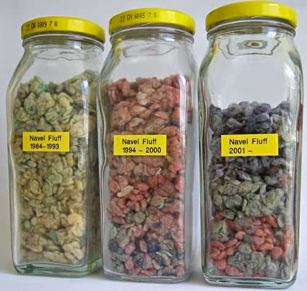

Javascript
framework apžvalga
Ramūnas Kiupelis
Šiandien
- Kada naudoti framework?
- Kodėl naudoti framework?
- Framework'ai
- Angular
- Backbone
- Ember
- Išbandyk
Kada naudoti framework?
- Vieno puslapio aplikacija
- Sumažinti HTTP užklausu HTML šablonams
- Aplikacija kuri bendrauja su API arba "Back-end" duomenų serveriu.
Kodėl naudoti framework?
Privalumai
- Struktura
- Padidina programuotojo produktivumą
- Kodo maintainability
- Kodo reusability
- Lengviau valdydi sudėtingumą
- Dauguma karkasų turi jau: Routing, templating, data binding...
Trūkumai
- Framework mokymasis
- Kodo pritaikymas prie framework
- Atnaujinimai nėra suderinami su ankstesne versija
- Greitis
- Dydis
- Framework priklausomybės
Frameworks
Pasirinkimas

MVC

MVP

MVVM

Didysis trejetas


- Brat Tech LLC, Google and community.
- Pradžia 2009
- https://github.com/angular/angular.js
Kodėl AngularJS?
- Kodo skaidymas į templates, directives, controllers, ir servisus, daro kodą labiau testuojama ir palaikoma
- Apsaugo nuo klaidų
- Paraleliai gali dirbti daug programuotojų su AngularJS
- HTML yra šablonas
- Two-way Data Bindingg
Directives
- Izolioja DOM logika
- Kur vyksta dviejų krypčių duomenų perdavimas?
- Pagrindinės direktyvos (ng-class, ng-repeat, ng-controller)
Priklausomybės

Kas naudoja
- YouTube on PS3
- Nike
- Huffington Post
- Kiti
Apžvalga
- Ilgas mokymosi laikas (salyginai)
- Užbaigtumas
- Angular 2.0 vs Angular 1.3
AngularJS 2.0 skirtumai
- Controllers
- Directive Definition Object (DDO)
- $scope
- angular.module
- jqLite

- Jeremy Ashkenas
- Pradžia Spalio 13, 2010
- https://github.com/jashkenas/backbone
Filosofija
Backbone yra bandymas atrasti minimalų rinkinį duomenų struktūrizavimui (modelių ir kolekcijų) ir vartotojo sąsają (vaizdams ir URL) primityvų, kurie paprastai naudojami statant interneto programų su JavaScripts.
Models
Collections
View
Events
Routing
Lankstumas
- DOM manipuliacija (jQuery, Zepto)
- Šablonai (underscore, handlebars)
- Bibliotekos
Priklausomybės


Exoskeleton nėra priklausomybių
Kas naudoja
- Foursquare
- LinkedIn Mobile
- Soundcloud
- Spotify
- Kiti
Apžvalga
- Lankstumas
- Paprastas duomenų apdorojimas (REST api)
- Integruojasi su dauguma lib, frameworks

- Yehuda Katz, Tom Dale and Ember.js contributors
- Pradžia 2011
- https://github.com/emberjs/ember.js
Ember.js
Sukurtas padeti programuotojas sukuti didelę aplikaciją, kuri gali konkuruoti su gimtają aplikacija. T.y. WEB prieš APP.
Filisofija
- Pasižymėk ir pasidalink nuoroda
- Nuorodos yra pagrindinis tikslas dalinimuisi ir bendradarbiavimui
Pagrindinės sąvokos

Priklausomybės


Kas naudoja
- Yahoo
- Groupon
- Zendesk
- Square
- Kiti
Apžvalga
- Sumažina kodo rašymo laiką
- Terminologijos mokymasis
- Naudoti tik dideliams projektams, netinka mobiliems
Demo
- AngularJS
- Backbone
- demo: http://ccravens.github.io/todont
- šaltinis: https://github.com/ccravens/todont
Išbandyk

Atnaujinimai
cd ~/uiacademy/uiacademy.github.io/studapp
git stash
git pull -r
git stash pop
cd ./bin
./run.sh stop
./run.sh start
Kas naujo?
- Atsirado miestų koordinatės
- Atsirado viešbučių paslaugos
- Atnaujinta užduotis
// Viešbučių paslaugos
var query = breeze.EntityQuery.from("HotelFeatures");
Šaltinai
- http://www.smashingmagazine.com/2013/11/07/an-in-depth-introduction-to-ember-js/#main_concepts
- https://www.youtube.com/watch?v=bODntw206ZQ
- https://www.youtube.com/watch?v=gNmWybAyBHI
- http://blog.fusioncharts.com/2014/08/angularjs-vs-backbone-js-vs-ember-js%E2%80%95choosing-a-javascript-framework-part-2/
- https://angular.io/
- http://backbonejs.org/
- http://emberjs.com/